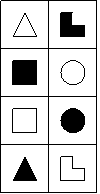

2.4. Обобщенный ТИМ современной России
|
Спектакль «Россия». Акт следующий. Те же. Там же. В том же. |
То, что ТИМ России – Есенин (ИЭИ), давно стало общим местом [09]. Тем не менее, мы не считаем себя вправе пропустить обоснование этой гипотезы как «очевидное».
Вопрос достаточно сложен хотя бы потому, что авторы статьи родились и постоянно жили в России. Поэтому роль средового фактора значительна, и посмотреть на все со стороны – задача не настолько уж тривиальная. С другой стороны, даже задавшись всерьез этим вопросом, сложно не «скатиться» на бытовые доказательства «очевидных» вещей – мол, и так все ясно. Итак, займемся обоснованием гипотезы ИЭИ.
Сильное и уверенное владение ситуацией во времени, характерное для базовой белой интуиции, проявляется в современной России практически повсеместно. Но проявляется своеобразно: упор делается на то, что для достижения своих целей правильнее будет подождать (а лучше так и вообще ничего не делать; что-либо делать в современной России очень не любят). То есть болезненность проявлений черной логики, и в то же время уверенное, даже чересчур уверенное, часто во вред себе, понимание законов времени – все это для современной России действительно характерно.
Этика же в России вполне сознательная, по крайней мере в том аспекте, который апеллирует к проявлению эмоций. Самый популярный стиль отдыха в России – бурная вечеринка с рассказыванием анекдотов и т.д.; рекомендуем по этому поводу статью, написанную как шутка, но тем не менее вполне иллюстративную [36]. Правда, эта вечеринка никогда не принимает поистине вселенских размахов базовой черной этики. Итак – белая интуиция (сейчас время отдохнуть!) в сочетании с черной этикой, проявляющиеся сознательно (творческий подход к эмоциям, «отвязность»).
В отношении структурной логики Россия очень внушаема. Правда, скорее предпочитает записывать всевозможные правила, нежели действовать согласно им.
Интровертная этика в России ограничивается правилами отношений, точнее, – правилами этики отношений, что само по себе звучит как «масло масляное». Однако для русского языка в целом и для современной России в частности характерно именно такое отношение к белой этике – как к чему-то, что должно демонстрироваться, но ни в коем случае не нарушая установленных правил.
Таким образом, БЛ даже не ролевая, а именно референтная. Действующая «как принято», а не вследствие четкого понимания структуры событий. «Закон что дышло: уже никто не помнит, что это такое».
Кратко пробежимся по функциям.
Базовая – интуиция времени. К уже сказанному следует добавить, что т.н. «загадочная русская душа» с ее вечными поисками «смысла жизни», стремлением к «вселенским истинам» вкупе с пренебрежением к «земному» – это как раз БИ. А также вера в «светлое будущее», ощущение, что времени всегда хватит и можно не спешить.
Творческая – этика эмоций. На Руси не существует строгой дихотомии «хороший/плохой» (в этическом плане). Эта шкала – аналоговая, растянутая, более того – динамически постоянно меняющаяся в зависимости не только от субъектов, но и просто во времени. Стандартная ситуация: выпили, подрались, помирились, выпили за дружбу… Творчество, однако. Скажем, вы можете представить такие отношения между англичанами или японцами? То-то.
Ролевая – сенсорика ощущений. Здесь все четко: стремление показать себя «белыми и пушистыми», хлеб-соль и прочее… Сюда же относятся жалобы «на жисть» в обычном состоянии и умение полностью игнорировать невзгоды в экстремальной ситуации.
Болевая – деловая логика. Описана выше достаточно полно. «Что делать?» – вопрос вечный и неразрешимый… Отсюда и метания в политике и экономике: надо как можно быстрее (БИ) принять любое решение, чтобы не довлела сама необходимость принимать решение (ЧЛ)… Дополнительная иллюстрация – знаменитая русская безалаберность, ведь ответственность тоже относится к ЧЛ. Ну и «от работы кони дохнут» и пр. – сюда же.
Суггестивная – волевая сенсорика. Общая тенденция к «сильной руке», «придет хозяин и все наладит» и т.д. Что характерно, большинство жертв сталинских репрессий не сопротивлялись арестам – то, что «так надо», сомнений не вызывало, максимум – «а за что именно меня?». Из последнего письма Н.И. Бухарина Сталину: «Коба, зачем тебе нужна была моя смерть?» [37].
Ближе к теме статьи: по этой же функции идет христианская сотериология («некто придет и всех спасет», просьбы о заступничестве к святым и т.п.).
Примечание: концепция сотериологии постулирует саму необходимость «спасения», никак не ограничивая его методы. Т.е. «спаси себя сам» – тоже сотериологический подход. В христианстве же наблюдается сочетание сотериологической веры в необходимость спасения с априорным неверием в то, что субъект может спастись «своими силами», т.е. наличествует своеобразная волевая импотенция (цель осознана, но постулирована невозможность ее самостоятельного достижения).
Референтная – структурная логика. О стремлении соответствовать принципу «так надо» уже было написано, не будем повторяться. Сюда же относится органическое неприятие строгой дисциплины.
Ограничительная – интуиция возможностей. Принцип «что бы ни делать, лишь бы ничего не делать», отвергание новых возможностей, стремление к консерватизму – в общем то, что называется рутинностью. Способствует выживанию нации как обособленной общности, но резко тормозит ее развитие, а также является фактором изоляции при прогрессивном ускорении развития информационных технологий.
К этой теме также относится периодическое смещение приоритетов в сторону служения другим, а не себе. Правда, в своеобразной форме «причинения добра» и т.д.
Демонстративная – этика отношений. При всей запутанности логики и спорадичности проявлений эмоций русский человек всегда знает, как к кому он относится, но при этом редко может четко сформулировать, почему так. Сюда же попадает «братская любовь», семейственность и т.д. Кроме того, по этой же функции – русские не любят морализаторства.
Дихотомии:
- Этика. Про «загадочную русскую душу» слышали? Какая уж тут логика...
- Интуиция. Иллюстрацией служит пословица «Голь на выдумки хитра» – это именно интуитивные озарения.
- Интровертность. Отсутствие внешней экспансии. Все великие завоевания были сделаны ранее, а потом – лишь удерживались границы. Позже все начало постепенно разваливаться – напр., распад СССР, или современная ситуация с Чечней.
- Иррациональность – все та же «русская душа». Лично поприсутствуйте хотя бы на одной пьянке, если до этого не доводилось...
Признаки Рейнина:
- Позитивизм. Надежда на светлое будущее, в чем бы оно не выражалось.
- Квестимность. Русскому человеку всегда требуется подтверждение, что его слушают и понимают. Вплоть до классического «Ты меня уважаешь?».
- Динамичность. Этот признак трудно отличить от иррациональности в плане проявления гибкости. Но русский человек даже ленится весьма динамично: ничегонеделание совместимо с весьма бурной деятельностью, см. «Особенности национальной охоты».
- Тактика. Опять же, придумать что-либо хитроумное – не такая уж и проблема (только русский может додуматься полировать поцарапанный CD валенком), но вот зачем вся эта деятельность – этот вопрос лучше оставить другим. Барин приедет и всех рассудит...
- Эмотивность. Кто не согласен, может пойти попробовать затеять ссору с соседями.
- Ориентированность на результат. Любое действие русским выполняется зачем-либо: «Пойдем пива выпьем!», а не просто «Давай встретимся».
- Уступчивость. Уже упоминавшееся «поссорился/помирился», повторяемое неоднократно.
- Предусмотрительность. Загляните в практически любую кладовку, что ли... Предусмотрительность, казалось бы, плохо совместима с разгильдяйством, но это предусмотрительность типа «как бы чего не вышло» из-за типичности ситуации «хотели, как лучше, а получилось как всегда».
- Решительность. Полностью соответствует пословице: «Русский мужик медленно запрягает, но быстро едет». Если решение после всех мучений и т.п. все же принято, то ИЭИ становится весьма решителен в его осуществлении и на полпути не остановится («Весь мир насилья мы разрушим…»).
- Веселость. Та же традиция застолий (общая с Жуковым). Вспомните монолог Задорнова о нефтяниках, когда немцев повели подписывать контракт в баню.
- Аристократичность. Все то же характерное деление на своих и чужих. Сейчас это не так распространено, но еще в конце прошлого веке повсеместно встречались деления по району проживания, причем весьма жесткие.
Квадренные (II) признаки: см. п. 2.1.
Резюме: противоречий с рабочей гипотезой не обнаружено.